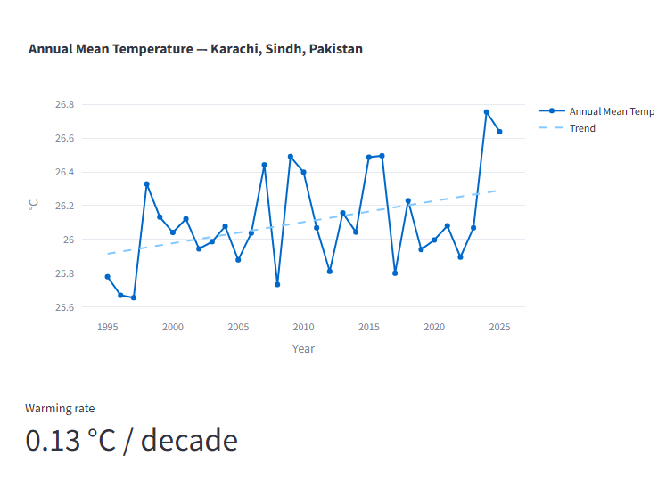
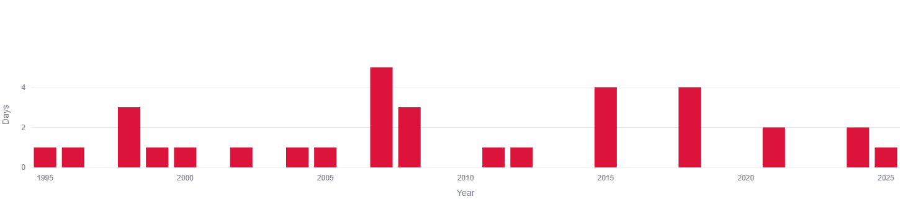
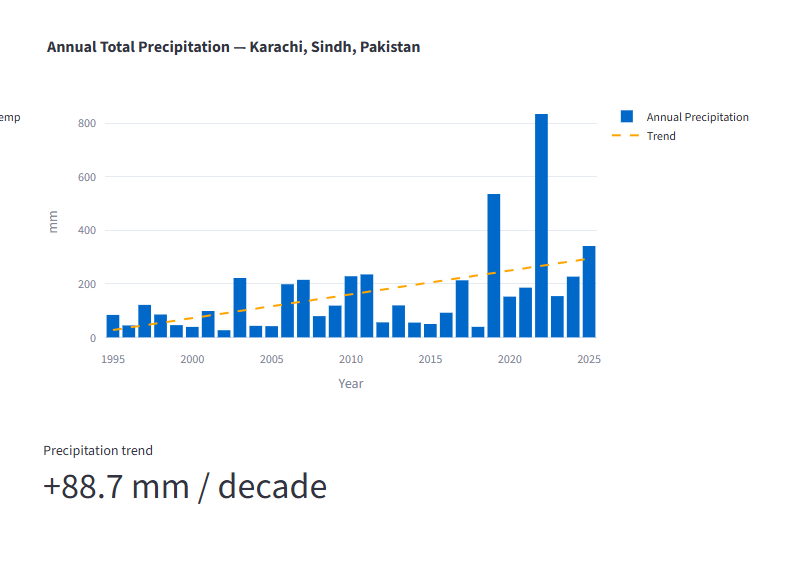
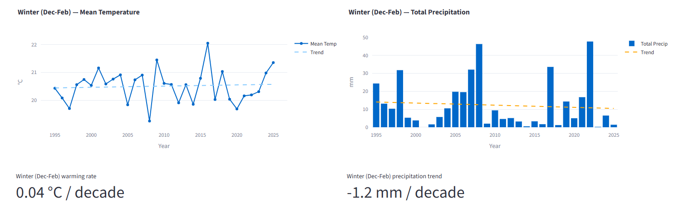
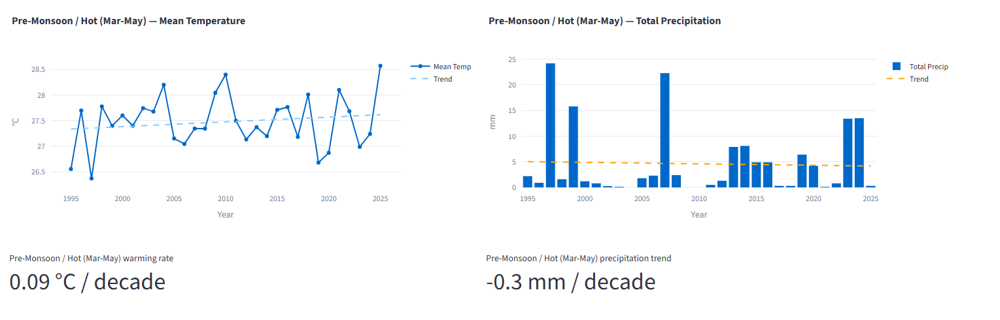
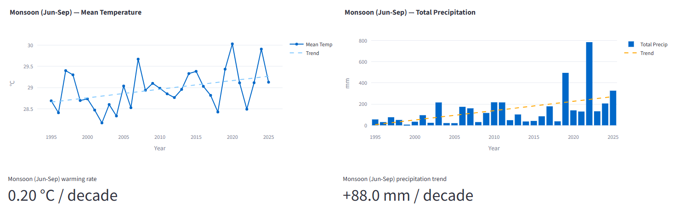
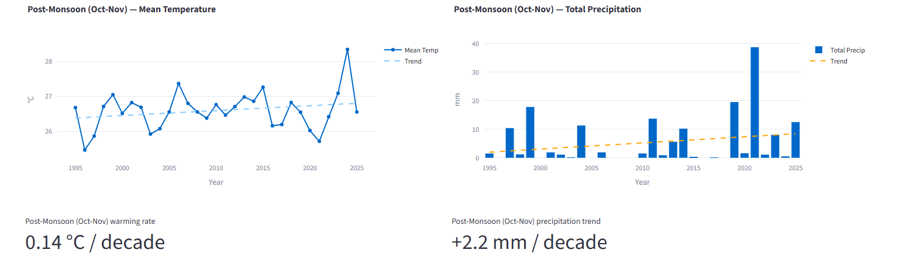

Karachi is Pakistan's largest city, its busiest port, and home to more than 20 million people — and its climate is changing in ways that are measurable, not just anecdotal. Using three decades of historical reanalysis weather data (1995–2025), this report breaks down exactly how Karachi's temperature, rainfall, and seasonal patterns have shifted over time, season by season.
This isn't a forecast. It's a data-backed look back — the kind of long-horizon climate picture that daily weather apps rarely show, but that matters enormously for anyone living in, planning for, or studying Karachi's future: residents, urban planners, farmers in surrounding Sindh, public health officials, and policymakers alike.
All figures below come from ERA5/ERA5-Land reanalysis data (Copernicus/ECMWF), covering 1995 through 2025, visualized through our interactive Climate Trend Dashboard.
Annual Mean Temperature

Karachi's annual mean temperature has been on a clear, if uneven, upward path over the past 30 years. In the mid-1990s, the city's average annual temperature sat close to 25.6–25.8°C. By the early-to-mid 2020s, that average had climbed to a range regularly touching 26.2–26.8°C, with the most recent years in the dataset showing some of the highest annual averages on record — approaching 26.8°C at the peak, before easing slightly to around 26.6°C.
The year-to-year line is far from smooth. Karachi's annual mean temperature swings noticeably from year to year — dipping as low as roughly 25.6°C in the late 1990s, then spiking above 26.4°C within just a few years, only to dip again. This volatility is normal for any single city's climate record; short-term swings are driven by natural variability (like ENSO/La Niña-El Niño cycles, regional atmospheric patterns, and localized weather anomalies), while the long-term trend line is what reveals the underlying climate signal.
That underlying signal, based on a linear regression across the full 1995–2025 window, works out to a warming rate of:
Key Figure: Warming Rate
At first glance, 0.13°C per decade might sound small. But compounded over 30 years, it represents roughly 0.4°C of cumulative warming in Karachi's average annual temperature since the mid-1990s — a meaningful shift for a coastal megacity where heat stress, water demand, and energy consumption are already under pressure. It's also broadly consistent with the global average land-surface warming trend recorded over a similar period, suggesting Karachi's warming is part of a wider regional and global pattern rather than a purely local anomaly.
Extreme Heat: Days Above 40°C

Beyond the average, what matters most for public health is the frequency of extreme heat days — days where the maximum temperature reaches or exceeds 40°C. Karachi's extreme-heat-day count, tracked year by year, tells its own story.
Rather than a smooth, steadily rising line, the data shows clustered spikes: most years in the 1990s and early 2000s saw just 0–1 such days, with occasional years reaching 3. But starting around 2007–2008, Karachi recorded a sharp jump — up to 5 days in a single year with max temperatures at or above 40°C, followed by 3 the year after. Similar spikes reappear around 2015 and 2018, each hitting 4 days in a single year, before settling into a more moderate pattern of 1–2 days annually in the most recent years shown.
This "clustered spike" pattern is itself an important climate signal. It suggests Karachi isn't necessarily experiencing a smooth, linear increase in extreme heat — it's experiencing more frequent and more intense heatwave clusters, punctuated by comparatively milder years. For public health planning, this matters: it means heat-health early warning systems need to be built for sudden, severe spikes, not just a gradual creeping baseline.
Annual Total Precipitation

If temperature tells one part of Karachi's climate story, rainfall tells an even more dramatic one. Karachi's annual precipitation record over the past 30 years is defined by extreme volatility layered on top of a strong upward trend.
For most of the 1995–2015 period, Karachi's annual rainfall totals were relatively modest and fluctuated in the 50–220mm range in a typical year, with several years falling well under 100mm — reflecting the city's naturally arid, coastal-desert climate. But from around 2018 onward, the pattern shifts dramatically. Annual totals begin spiking to levels rarely seen in the earlier record:
- A jump to roughly 540mm in one year around 2020
- A remarkable spike to over 830mm in a single year around 2022 — by far the highest annual total in the entire 30-year dataset
- A subsequent year still elevated at around 340mm
Key Figure: Precipitation Trend
This is a substantial upward trend, and it's driven almost entirely by an increase in extreme, high-volume rainfall years rather than a steady year-on-year rise. In other words: Karachi isn't necessarily getting "more rain" in a gentle, evenly distributed sense — it's getting rarer but far more intense rainfall events, which is consistent with what climate scientists broadly expect from a warming atmosphere (warmer air holds more moisture, which tends to produce fewer but heavier rainfall events rather than a smooth increase in drizzly days).
This finding directly echoes what Karachi residents have experienced firsthand in recent years: catastrophic urban flooding events, most notably during the 2020 monsoon season, when the city recorded some of its heaviest rainfall in decades within a matter of days, overwhelming drainage infrastructure that was never designed for such volumes. The data confirms this wasn't an isolated freak event — it's part of a broader, measurable pattern of intensifying extreme rainfall.
Seasonal & Monsoon Trend
Annual averages can hide a lot of important detail — a year can have a "normal" average temperature while individual seasons behave very differently from historical norms. To understand Karachi's climate shift properly, the data needs to be broken down season by season, using the standard South Asian seasonal calendar: Winter (December–February), Pre-Monsoon/Hot (March–May), Monsoon (June–September), and Post-Monsoon (October–November).
Winter (Dec-Feb)

Karachi's winter season shows the mildest warming signal of all four seasons — and the data reveals something notable: for most of the 30-year record, winter mean temperatures oscillated in a fairly tight band, roughly 19.5°C to 21°C, without a strong directional trend for much of the period. There's a striking spike to nearly 22°C around 2015, an outlier year, followed by a return to the more typical range. Only in the final few years of the dataset — from around 2022 onward — does winter temperature show a clearer upward move, climbing toward 21.3°C.
Key Figures: Winter
Warming rate: +0.04°C per decade
Precipitation trend: −1.2mm per decade
Winter is the only season in Karachi's record showing a declining precipitation trend, and the warming rate here is the smallest of any season — nearly flat compared to the rest of the year. Winter rainfall totals themselves are naturally low (Karachi's winters are its dry season), typically ranging from under 5mm to just over 30mm in a given year, with one standout year near 46mm around 2007. The slight downward trend suggests Karachi's already-dry winters may be trending marginally drier still, though the signal is weak enough that natural variability likely still dominates.
Pre-Monsoon / Hot (Mar-May)

The pre-monsoon season — Karachi's hottest stretch of the year, before monsoon rains arrive — shows a more consistent, if modest, warming pattern. Mean temperatures across this season have ranged from lows near 26.5°C in the mid-1990s to a striking recent high approaching 28.5°C, with the general trend line sitting in the 27–27.5°C band for most of the three decades before pushing higher in the final years of the record.
Key Figures: Pre-Monsoon
Warming rate: +0.09°C per decade
Precipitation trend: −0.3mm per decade
Precipitation during this hot, dry season is naturally minimal — Karachi doesn't expect meaningful rain in April or May in a typical year — but a handful of notably wet outlier years stand out sharply from the rest: totals near 24mm around 1998 and again above 22mm around 2007, dramatically higher than the sub-5mm totals seen in most other years of this season. The overall trend is essentially flat to marginally declining, meaning the pre-monsoon season remains reliably dry, punctuated by rare anomalous wet years rather than any systematic shift.
Monsoon (Jun-Sep)

The monsoon season is where Karachi's climate shift shows up most clearly and most consequentially — both in temperature and, especially, in rainfall.
Monsoon mean temperatures have risen from a range around 28.5–29°C in the mid-1990s to recent years touching 29.9–30°C, among the clearest and most consistent warming trajectories of any season in the dataset.
Key Figures: Monsoon
Warming rate: +0.20°C per decade
Precipitation trend: +88.0mm per decade
This is the strongest warming rate of any season — roughly five times steeper than winter's — and it comes paired with by far the largest precipitation increase of any season, essentially accounting for almost the entire annual precipitation trend described earlier. Monsoon rainfall totals were mostly modest through the 1990s and 2000s, generally in the 20–220mm range, before surging dramatically in more recent years: a spike to roughly 500mm around 2020, and an extraordinary ~790mm in a single monsoon season around 2022 — nearly four times the typical totals seen just a decade earlier.
This combination — a warming monsoon season paired with sharply intensifying rainfall extremes — is precisely the pattern climate scientists associate with a warming Arabian Sea and broader Indian Ocean warming trends, both of which fuel more energetic monsoon systems capable of dumping extreme rainfall in short windows. For a coastal city like Karachi, with aging drainage infrastructure and extensive impervious urban surface area, this trend has direct and serious implications for flood risk.
Post-Monsoon (Oct-Nov)

The post-monsoon transition season shows a warming trend nearly as strong as the monsoon itself, alongside a more modest but still positive rainfall trend. Mean temperatures in this window have moved from roughly 25.8–26°C in the mid-1990s to a sharp recent spike above 28°C, the highest post-monsoon reading anywhere in the 30-year record, following what appears to be a period of relative stability in the 26–27°C range through most of the 2000s and 2010s.
Key Figures: Post-Monsoon
Warming rate: +0.14°C per decade
Precipitation trend: +2.2mm per decade
While post-monsoon rainfall totals remain low in absolute terms for most years (typically under 15mm), a dramatic outlier appears around 2020, with totals spiking close to 39mm — nearly double any other year in the entire post-monsoon record. This, combined with the season's strong warming trend, suggests the traditional boundary between Karachi's monsoon and its dry winter season may be becoming less predictable, with warmth and occasional heavy rain now extending later into what was historically a quieter, drier transition period.
What This Means for Karachi
Taken together, these four seasonal breakdowns paint a consistent picture: Karachi's climate is warming across every season, but unevenly — with the monsoon and post-monsoon periods warming fastest and bringing the sharpest increases in extreme rainfall, while winter remains comparatively stable and even trending slightly drier.
For a city of Karachi's size and infrastructure profile, a few practical implications stand out:
- Flood risk is rising faster than average rainfall suggests. Because the increase is concentrated in extreme, high-intensity events rather than gradual increases, drainage and urban planning need to account for rarer-but-more-severe flooding, not just modestly higher averages.
- Heat health planning needs to prepare for clustering, not just gradual rise. Extreme heat days above 40°C arrive in intense multi-year clusters rather than a smooth annual increase, which has direct implications for how early-warning systems and cooling-center resources should be scheduled and resourced.
- The monsoon is changing character, not just intensity. A monsoon season that is both getting hotter and delivering dramatically more rainfall in short bursts is a very different planning challenge than a monsoon that is simply "getting wetter" in an evenly distributed way.
- Winter's relative stability is not guaranteed to continue. The uptick in winter temperatures visible only in the final few years of the record is worth monitoring closely in coming years to see whether it represents the start of a new trend or a short-term anomaly.
Why Karachi's Trend Matters Beyond the City
Karachi's warming and rainfall trends aren't happening in isolation — they sit within a larger regional pattern affecting the entire Indus basin and Pakistan's southern coastline. As the country's primary port and economic engine, Karachi's climate stability has ripple effects well beyond its own municipal boundaries.
Water security. Karachi already relies heavily on the Indus River system and limited groundwater reserves for its freshwater supply. A warming trend that intensifies evaporation, combined with a monsoon that delivers rainfall in fewer, more extreme bursts rather than steady replenishment, complicates long-term water planning — reservoirs and distribution systems built around historical averages may struggle to manage both flash floods and extended dry spells within the same broader climate pattern.
Economic exposure. As Pakistan's financial and shipping hub, Karachi's infrastructure — ports, industrial zones, transportation networks — was largely built assuming the historical climate baseline of the 20th century. The data here shows that baseline has already shifted meaningfully, particularly around monsoon-season rainfall intensity, which has direct implications for infrastructure resilience planning, insurance risk modeling, and disaster preparedness budgeting.
Public health systems. The clustered nature of extreme heat days found in this analysis is particularly relevant for hospitals and emergency services. Rather than planning for a smooth, predictable rise in heat-related admissions, Karachi's health system needs surge capacity models built around multi-day heatwave clusters — closer to how cities plan for hurricane or earthquake response than for a gradually warming baseline.
Regional comparison. Karachi's coastal location gives it a moderating influence that inland Sindh cities like Jacobabad or Sukkur don't share — those cities regularly see far more extreme summer heat. Comparing Karachi's relatively moderate warming rate against inland Sindh's more severe trends (a comparison we'll explore in a future report) helps clarify how much of South Asia's warming burden is being absorbed differently across coastal versus inland geography. See how Karachi compares to Delhi's continental extremes, Dhaka's faster-warming, drying delta climate, Colombo's far wetter tropical climate, and Kathmandu's surprising lack of annual warming in our companion reports.
Search any South Asian city and see its own temperature, rainfall, and monsoon trends, built from 30 years of data.
Open the Interactive Dashboard →Data Source & Methodology
All figures in this report are derived from the Open-Meteo Historical Weather API, built on ERA5 and ERA5-Land reanalysis data produced by the European Centre for Medium-Range Weather Forecasts (ECMWF) through the Copernicus Climate Change Service. Reanalysis data combines millions of real-world observations (weather stations, satellites, ships, and more) with a physics-based atmospheric model to produce a complete, gap-free historical record — the same category of dataset widely used in peer-reviewed climate science.
Trend rates (°C per decade, mm per decade) are calculated using simple linear regression across the full 1995–2025 period for each metric. Seasonal boundaries follow the standard South Asian meteorological convention: Winter (December–February), Pre-Monsoon/Hot (March–May), Monsoon (June–September), and Post-Monsoon (October–November), consistent with definitions used by regional meteorological departments including Pakistan's own.
As with any reanalysis dataset, figures represent a grid-cell average (roughly 9–25km resolution) rather than a single-point station reading, and may differ slightly from any individual weather station's direct measurements — particularly in built-up urban cores where local heat-island effects can push real-world temperatures somewhat higher than the regional reanalysis average suggests.
Frequently Asked Questions
Has Karachi's temperature actually increased over the past 30 years?
Yes. Karachi's annual mean temperature has risen at a rate of approximately 0.13°C per decade since 1995, with the monsoon season warming fastest at roughly 0.20°C per decade.
Is Karachi getting more rain or less rain?
On balance, more — but unevenly. Annual precipitation has increased at roughly 88.7mm per decade, driven almost entirely by a small number of extremely heavy rainfall years, particularly during the monsoon season, rather than a steady year-on-year increase.
Why did Karachi flood so badly in recent years if it's historically a dry city?
The data shows monsoon season rainfall has intensified sharply in recent years, with totals in some years reaching nearly four times typical historical levels. Combined with the city's dense urban infrastructure and limited drainage capacity, these extreme rainfall spikes translate directly into severe flooding events.
Which season is warming fastest in Karachi?
The monsoon season (June–September) shows the fastest warming trend of any season, at approximately 0.20°C per decade — roughly five times the rate seen in winter.
Is Karachi's winter climate stable?
Largely yes, historically — winter shows the mildest warming trend of any season and even a slight decline in precipitation. However, the final few years of the dataset show an emerging uptick in winter temperatures worth watching closely.
What causes Karachi's extreme rainfall spikes?
The sharpest rainfall increases occur during the monsoon season and are linked to a warming Arabian Sea, which fuels more energetic monsoon weather systems capable of delivering much larger rainfall totals in short, intense bursts rather than steady seasonal rain.
How does Karachi's warming compare to the global average?
Karachi's annual warming rate of roughly 0.13°C per decade is broadly in line with global average land-surface warming trends recorded over a similar multi-decade period, suggesting the city's climate shift reflects wider global and regional patterns rather than a purely local effect.